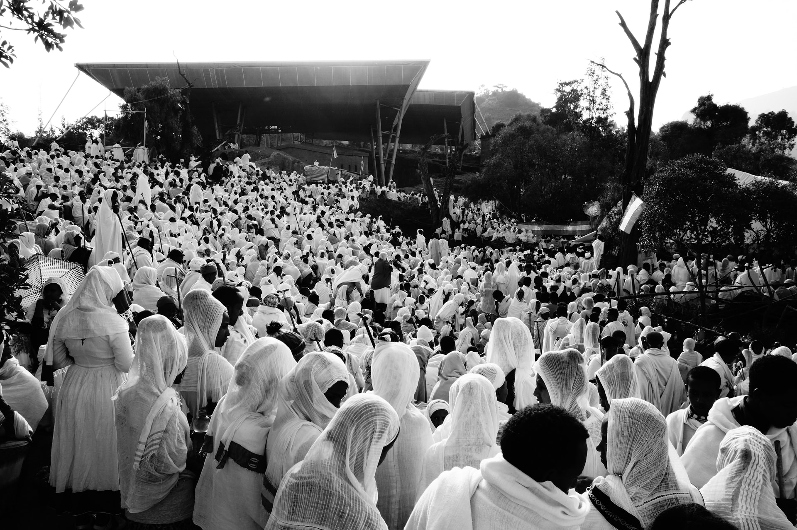
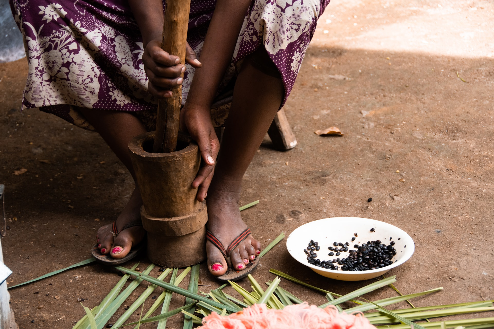
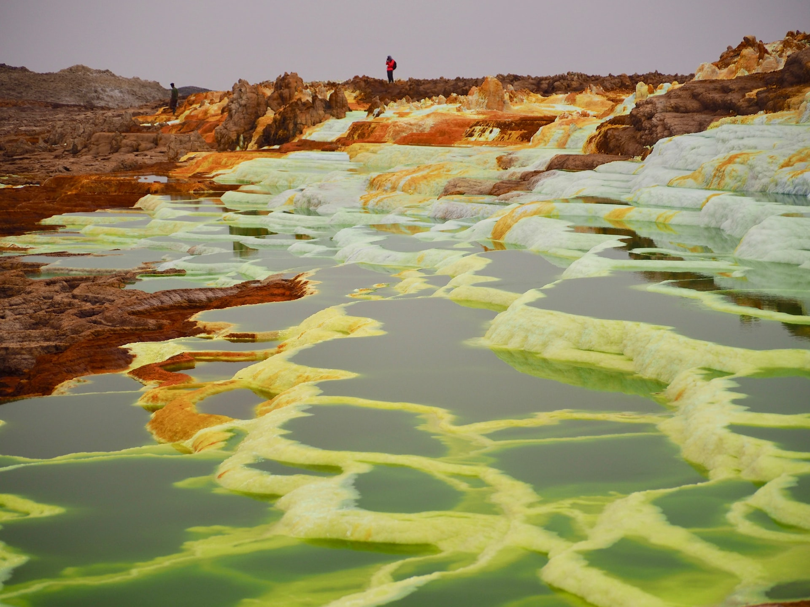
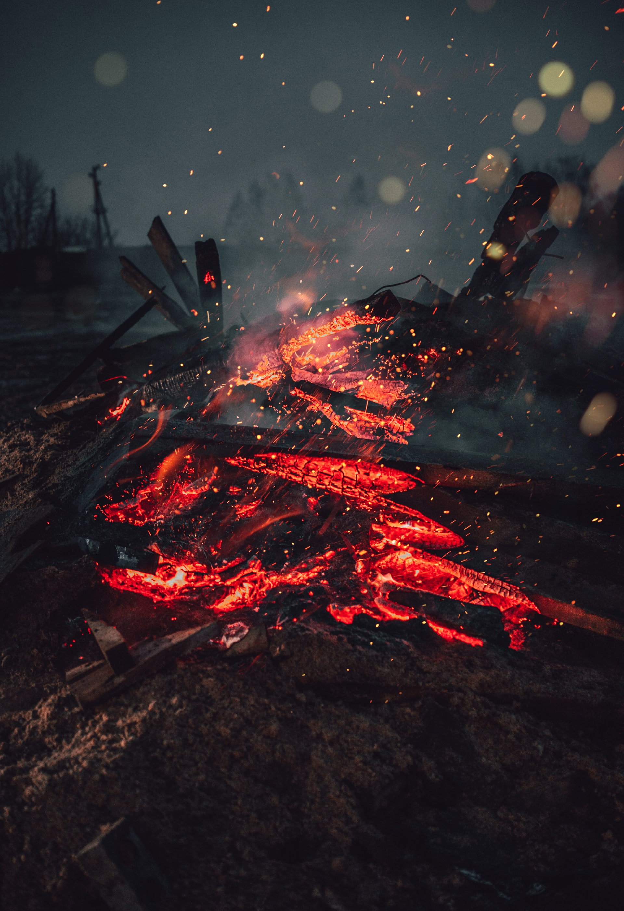

ΟΙ ΜΑΥΡΟΙ ΕΛΛΗΝΕΣ
Ποιός είναι, τελικά, ο Έλληνας εμφανισιακά; Είναι ο ξανθός γαλανομάτης της αρχαιότητας, με την φημισμένη ελληνική μύτη; Είναι ο σημερινός γαμψομύτης, με τα μαύρα μαλιά και το καχύποπτο ανατολίτικο βλέμα; Είναι ψηλός, κοντός, μελαμψός, χλωμός, ή τί; Σε ποιά φυλή ανήκει;
Μιά ακριβής απάντηση στο ανωτέρω ερώτημα θα ήταν δυνατή μόνον αν η ιστορία και η πραγματικότητα ήταν στατική. Όμως, όλη η ιστορία της ανθρωπότητας είναι μιά ατέλειωτη ιστορία μετακινήσεων λαών και τεραστίων δημογραφικών αλλαγών, τα πάντα ρει, μηδέποτε κατά τ´αυτό μένειν¨, που έλεγε και ο Ηράκλειτος. Έτσι, οι αρχικοί Τούρκοι, που υπάρχουν και σήμερα στην Κεντρική Ασία, ελάχιστα διαφέρουν από τους Κινέζους και τους Μογγόλους, δηλαδή, ανήκουν σαφώς στην κίτρινη φυλή, ενώ οι Τούρκοι της Τουρκίας είναι una faccia una razza με εμάς, ύστερα από χίλια περίπου χρόνια επιμειξίας με τους ινδοευρωπαϊκούς λαούς της περιοχής, ιδίως Έλληνες και Πέρσες.
Σαν λαός, οι Έλληνες ποτέ δεν έζησαν μόνοι τους σε κάποιο γεωγραφικό χώρο. Ήδη στην αρχαιότητα συνυπήρξαν με Πελασγούς, μέτοικους, δούλους και άλλους, είναι δε γενικά αποδεκτό πως στην Αρχαία Αθήνα οι καθαρόαιμοι Έλληνες ήταν μειοψηφία. Κάτι τέτοιο υπαινίσσεται και ο μύθος της Ωγυγίας, το νησί, όπου είχαν μαζευτεί όλοι οι Έλληνες, και το οποίο τελικά καταποντίστηκε.
Στη συνέχεια, οι Έλληνες έζησαν επί δύο και πλέον χιλιετηρίδες μέσα σε αυτοκρατορίες χωρίς εσωτερικά σύνορα. Επιπλέον, υπήρξαν κοσμογονικές μετακινήσεις λαών, όπως των Σλάβων και των Αρβανιτών, σήμερα δε, με την παγκοσμιοποίηση, το φαινόμενο της ανάμειξης των λαών όχι μόνον δεν σταματά αλλά και επιτείνεται. Ίσως να το έχει προβλέψει η φύση το φαινόμενο αυτό, διότι αν το αίμα δεν κυκλοφορεί και δεν ανακατεύεται το μόνο που μας περιμένει είναι ο εκφυλισμός – ιδίως όταν ένα έθνος είναι αριθμητικά μικρό. Αυτό φαίνεται πως το έχουν καταλάβει και οι βασιλικές οικογένειες στις μέρες μας, γιαυτό και παντρεύονται πλέον αθρόα με ¨κοινούς θνητούς¨.

Πολύ πριν ξεκινήσει η μετανάστευση προς τη σημερινή Ελλάδα, υπήρξε η μετανάστευση από την Ελλάδα προς τον έξω κόσμο – και δεν πήγαν όλοι στην Αμερική ή στην Αυστραλία, ούτε στις φάμπρικες της Γερμανίας, που λέει και ο Καζαντζίδης. Πήγαν και στην Αφρική, σχεδόν σε όλες τις χώρες της Μαύρης Ηπείρου – δυστυχώς, δεν έβγαλε γιαυτούς τραγούδι ο Καζατζίδης, αλλά ίσως βγάλει ο Καρβέλας στις μέρες μας, με ερμηνευτή τον Ρουβά.
Στη Νότιο Αφρική υπήρχαν περί τις 100.000 Έλληνες, μέχρι την πτώση του καθεστώτος Απαρτχέϊντ, οπότε έφυγαν αρκετοί. Στην Αιθιοπία υπήρχαν 15.000 Έλληνες, οι περισσότεροι από τους οποίους έφυγαν όταν έγινε ο κομουνισμός το 1974 και τους δήμευσε τις περιουσίες. Αρκετοί, πάντως, έμειναν, και στην Αιθιοπία, και στη Νότιο Αφρική, καθώς και στο Σουδάν, στο Κονγκό και σε πολλές άλλες αφρικανικές χώρες.
Επειδή η μετανάστευση προς τις χώρες εκείνες ήταν πιό περιπετειώδης από μιά μετανάστευση στη Σουηδία, για παράδειγμα, συνήθως πήγαιναν μόνον νέοι άνδρες, οι οποίοι έκαναν οικογένειες με ντόπιες γυναίκες. Τα παιδιά τους, που τώρα πλέον είναι τρίτης και τετάρτης γενεάς, είναι μιγάδες, συχνά μάλιστα με περισσότερο από 50% αφρικανικό αίμα, αφού ήδη ο δεύτερης γενεάς απόγονος του πρώτου μετανάστη παντρεύτηκε ντόπια γυναίκα.
Στη Βόρεια Ευρώπη, Αμερική ή Αυστραλία, ο τρίτης και τετάρτης γενεάς έλληνας είναι πλέον απλά, άτομο ελληνικής καταγωγής. Μπορεί να διατηρεί το ελληνικό του όνομα, ίσως να είναι και ορθόδοξος, αλλά σίγουρα έχει χάσει τη γλώσσα ή την μιλάει ελάχιστα και σπαστά. Στην Αφρική, όμως, η ελληνική γλώσσα διατηρείται ζωντανή και στις γενεές αυτές, ιδίως σε μέρη, όπου υπήρξε ελληνικό σχολείο και ελληνική εκκλησία.
Μιά τέτοια περίπτωση είναι και η Αιθιοπία. Παρά την αποχώρηση χιλιάδων ελλήνων, κυρίως μιγάδων, όταν επικράτησε το εθνοσωτήριο κομμουνιστικό καθεστώς του Μεγκίστου, πολλοί έμειναν, μερικοί δε επέστρεψαν και μετά την πτώση του κομμουνισμού ή εξακολουθούν να επιστρέφουν και σήμερα, με την κρίση που υπάρχει στην Ελλάδα. Ιδίως όσοι είχαν κάποιο πατρογονικό σπίτι, χωράφι ή επιχείρηση στην Αιθιοπία, που τους είχε κατασχεθεί επί κομμουνισμού, αλλά τώρα μπορούν να το διεκδικήσουν, ξαναγυρίζουν τώρα στη χώρα, όπου γεννήθηκαν, η δε κατηγορία αυτή μπορέι να είναι και κατά 80% μαύροι, αλλά γλωσσικά και πολιτιστικά είναι εντελώς ελλαδικοί, αφού έζησαν δύο και τρεις δεκαετίες στην Ελλάδα.
Έτσι, στην Αιθιοπία δεν έπαψε ποτέ να λειτουργεί το ελληνικό σχολείο, η ελληνική κοινότητα, το ελληνικό κλαμπ ¨Ολυμπιακός¨, το οποίο είναι ένα από τα φημισμένα και δημοφιλή κλαμπ της πόλης για καθημερινό φαγητό (ελληνική κουζίνα), δεξιώσεις και διάφορες άλλες εκδηλώσεις, ανταγωνιζόμενο το αντίστοιχο Ιταλικό, που λέγεται ¨Γιουβέντους¨.
Ο Σωκράτης Καβαλιεράτος έφτασε στην Αδδίς Αμπέμπα αμέσως μετά τον Β΄ Παγκόσμιο Πόλεμο, μόνος και άφραγκος, έχοντας ακούσει, βέβαια, πως στην Αφρική μαζεύεις το χρυσό με το φτυάρι στους δρόμους. Πήγε λοιπόν στην ελληνική κοινότητα, εξήγησε την κατάστασή του, και εκεί του έδωσαν δέκα δολάρια και τον συμβούλευσαν να πάει σε μιά πόλη εφτακόσια τόσα χιλιόμετρα νοτιοδυτικά της Αδδισαβάβης, ονόματι Ντεμπιντόλο. Όπερ και εγένετο, αλλά τί κάνουμε τώρα στο Ντεμπιντόλο, και πόσο θα μας φτάσουν τα δέκα δολάρια; Τα μισά έφυγαν ήδη στο ταξίδι, που πήρε είκοσι ημέρες γεμάτες κάθε λογής στραπάτσο.
Ύστερα από πολλή σκέψη και επακριβείς μαθηματικούς υπολογισμούς, ο Σωκράτης αποφάσισε να ανοίξει δική του δουλειά στη λαϊκή αγορά της πόλης, και να πουλάει βελόνια. Δεν έφτανε και για παραπάνω το κεφάλαιό του...
Στις λαϊκές αγορές αυτού του είδους, τα πράγματα είναι απλά. Ο καθένας που έχει κάτι να πουλήσει βρίσκει μιά γωνιά, κάθεται χάμω, και απλώνει τα εμπορεύματά του στο χώμα, όπως περίππου κάνουν σήμερα και οι Νιγηριανοί, που πουλάνε τσαντάκια στους δρόμους της Αθήνας. Ο Σωκράτης, όμως, βρήκε κάτι κουτσοτάβλια, επένδυσε και σε μερικές πρόκες και ένα σφυράκι, και έφτιαξε ένα υποτυπώδες τραπεζάκι, όπου εξέθετε τα βελόνια του, απλωμένα με μεγάλη τάξη και μερακλοσύνη. Έτσι, εκτός από το κάτασπρο χρώμα του, ήταν διακριτός από τους άλλους εμπόρους και λόγω του ότι ήταν ο μόνος, που διέθετε την πολυτέλεια ενός πάγκου.
Όταν, τώρα, σε αυτές τις αγορές, ο πελάτης πάει σε έναν μικροπωλητή για να αγοράσει π.χ. κρεμμύδια, η απλή αυτή συναλλαγή μπορεί να κρατήσει και μισή ώρα, με τον τρόπο που γίνεται: ¨μπα, κρεμμύδια θέλεις; Τί θα τα κάνεις;¨ ¨Λέω να μαγειρέψω ένα γιαχνιστό¨. ΄Και πώς θα το κάνεις; Βάζεις και σκόρδα μέσα; Και πού μένεις; Και πόσα παιδιά έχεις; Πόσες κατσίκες, προβατίνες, γαϊδούρια και κότες έχεις;¨ Και πάει λέγοντας, αφού δε τελειώσουν αυτά, μετά αρχίζουν τα ¨ξέρεις τον τάδε και τον δείνα;¨ και καταλήγουν στα ατέλειωτα παζάρια. Να πως περνάει το μισάωρο γεμάτο.
Ο Σωκράτης δεν είχε βέβαια κανένα λόγο να ακολουθήσει τέτοιες αναποτελεσματικές μεθόδους εμπορίου, ούτε είχε το παραμικρό ενδιαφέρον να μάθει αν ο πελάτης του ήθελε το βελόνι για να μαντάρει κάλτσα ή για να μπαλώσει βρακί, αν ο γάϊδαρός του πελάτη γκαρίζει ή αν οι κότες του κακαρίζουν. Έτσι, ερχόταν ο πελάτης, ζητούσε ένα βελόνι, το έπαιρνε αμέσως, πλήρωνε μιά σταθερή τιμή χωρίς παζάρια, έπαιρνε τα ρέστα χωρίς καθυστέρηση, και αυτή η αποτελεσματικότητα έκανε τον Σωκράτη διάσημο σε όλο το Ντεμπιντόλο. Σάστισαν όλοι που η συναλλαγή διεκπεραιωνόταν σε λιγότερο από ένα λεπτό! Έτσι είναι οι ¨Φερένζι¨ (δηλαδή, οι ¨Φράγκοι¨, όπως ονομάζονται οι λευκοί στην Αιθιοπία), σου λέει, εργατικοί και αφοσιωμένοι στη δουλειά τους, όχι όπως εμείς, που περνάμε το 90% του χρόνου μας κουβεντιάζοντας και τραγουδώντας, όταν δεν το ρίχνουμε στον ύπνο δηλαδή. Που πας στο σουπερμάρκετ του Μπαμπη, στην Αδδισαβάβη, και έχει 175 υπαλλήλους μέσα (ένα αντίστοιχο στην Ευρώπη δεν θα είχε παραπάνω από 15, βαριά 20), οι οποίοι κουβεντιάζουν μεταξύ τους ασταμάτητα, ή λουφάρουν, κρυμένοι πίσω από τα ράφια, ή τραγουδούν, και όχι μόνον δεν εξυπηρετούν σε τίποτε τον πελάτη αλλά μπλοκάρουν και τους διαδρόμους του μαγαζιού και δεν μπορείς να περάσεις με το καροτσάκι σου.
Έτσι, ο Σωκράτης απέκτησε μεγάλη πελατεία και η επιχείρησή του όλο και μεγάλωνε. Στα βελόνια πρόσθεσε και κουβαρίστρες, και ψαλίδια, και κλωστές, και μπογιές για να βάφεις τις κλωστές. Κατέληξε βαθύπλουτος, τοπικος μεγιστάνας στην επαρχία Βολέγκα, όπου είναι το Ντεμπιντόλο, με μαγαζιά, φυτείες καφέ, φορτηγά και πολλά άλλα. Παντρεύτηκε και μιά μισή-μισή ντεμπιντολιώτισα και έκανε δέκα παιδιά παρακαλώ, τα περισσότερα από τα οποία κατέληξαν στην Ελλάδα τα μαύρα χρόνια του κομμουνισμού, όμως, τώρα έχουν αρχίσει και ξαναγυρίζουν στην Αιθιοπία.
Το πρώτο που διεκδίκησαν ήταν το σπίτι τους. Η οικεία Καβαλιεράτου ήταν σίγουρα το μεγαλύτερο και καλύτερο σπίτι σε ολόκληρο το Ντεμπιντόλο, μιά πόλη 50 χιλιάδων κατοίκων. Με την επιβολή του κομμουνισμού, όμως, το σπίτι κατασχέθηκε και έγινε η κατοικία του Γραμματέα του Κόμματος της επαρχίας Βολέγκα. Η πολύτεκνη οικογένεια Καβαλιεράτου αναγκάστηκε να μετακομίσει σε μιά καλύβα, που θύμιζε καταπληκτικά την καλύβα του Καραγκιόζη, ακριβώς απέναντι από το πρώην σπίτι τους. Τα μικρά παιδιά, παίζοντας, προσπαθούσαν να μπούν στο σπίτι, όπου είχαν γεννηθεί, αλλά οι φύλακες του Γραμματέα του Κόμματος της Εργατιάς τα έδιωχναν με κλωτσιές και με βρισιές. Ίσως αυτό ειδικά να τους δημιούργησε το απωθημένο να ξαναπάρουν το σπίτι τους κάποτε, αφού μεγάλωσαν με την ελπίδα ¨πάλι με χρόνους, με καιρούς, πάλι δικά μας θάναι...¨.
Εκτός από τέτοια απωθημένα, όμως, πολλοί επιστρέφουν στην Αφρική, ή φεύγουν για άλλες ευρωπαϊκές χώρες, διότι, δυστυχώς, δεν βρήκαν και μεγάλη φιλοξενία στην Ελλάδα. Η ίδια κοινωνία, που κάποτε είχε δεχθεί τους μικρασιάτες πρόσφυγες κλεβοντας τις βαλίτσες τους στα λιμάνια και τους σιδηροδρομικούς σταθμούς, σήμερα βγάζει κραβγές αλλαλαγμού πως οι Έλληνες ανήκουν στη λευκή φυλή και πως αυτοί είναι σαφώς ανεπιθύμητοι. Στην καλύτερη περίπτωση, γίνονται δεκτοί με βλέμματα βλοσσυρότητας και ειρωνίας, στη χειρότερη με προπηλακισμούς και προσβολές. Έτσι, οι μαύροι Έλληνες της Αφρικής καταλαβαίνουν πως ο Ξένιος Δίας δεν ζει πιά στο χώρο, που γεννήθηκε, όπως τους είχαν πει στα ελληνικά σχολεία, όπου φοίτησαν, γιαυτό και καλύτερα να του δίνουμε από εδώ, όπου και να πάμε χειρότερα δεν μπορεί να είναι...
Γεράσιμος Φουρλάνος
Διδάκτωρ Νομικής
Πανεπιστήμιο Ουψάλας